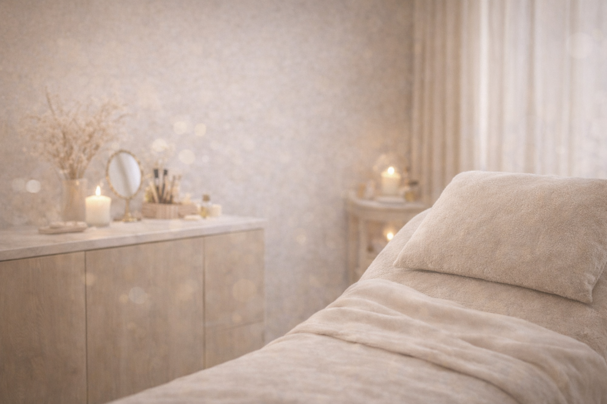
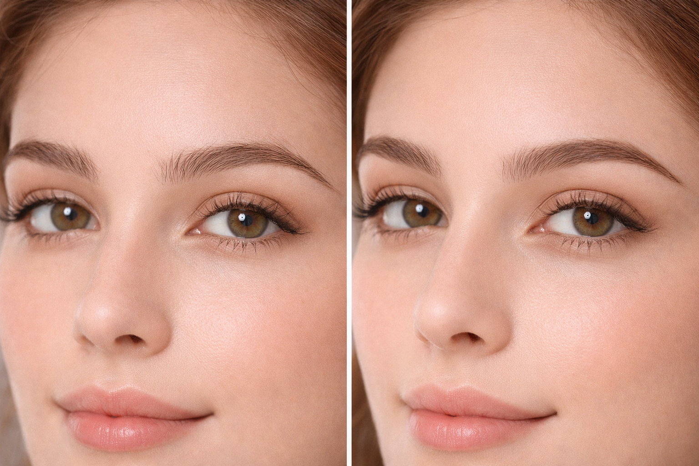
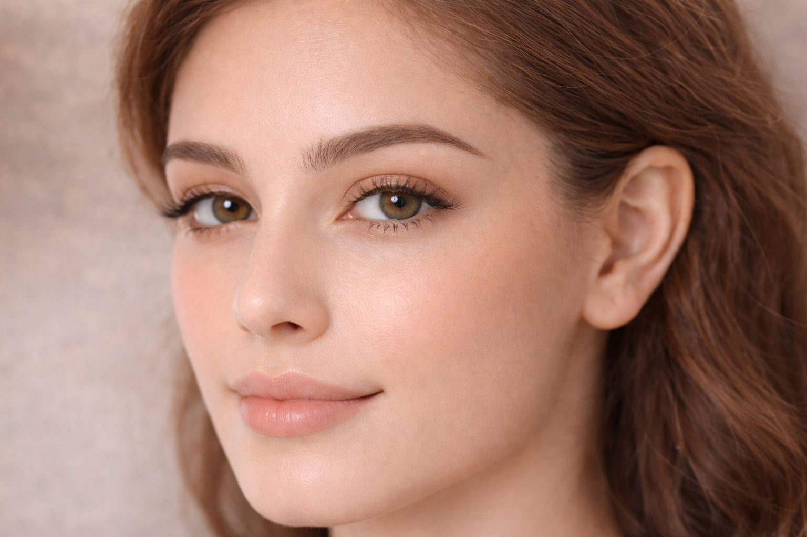
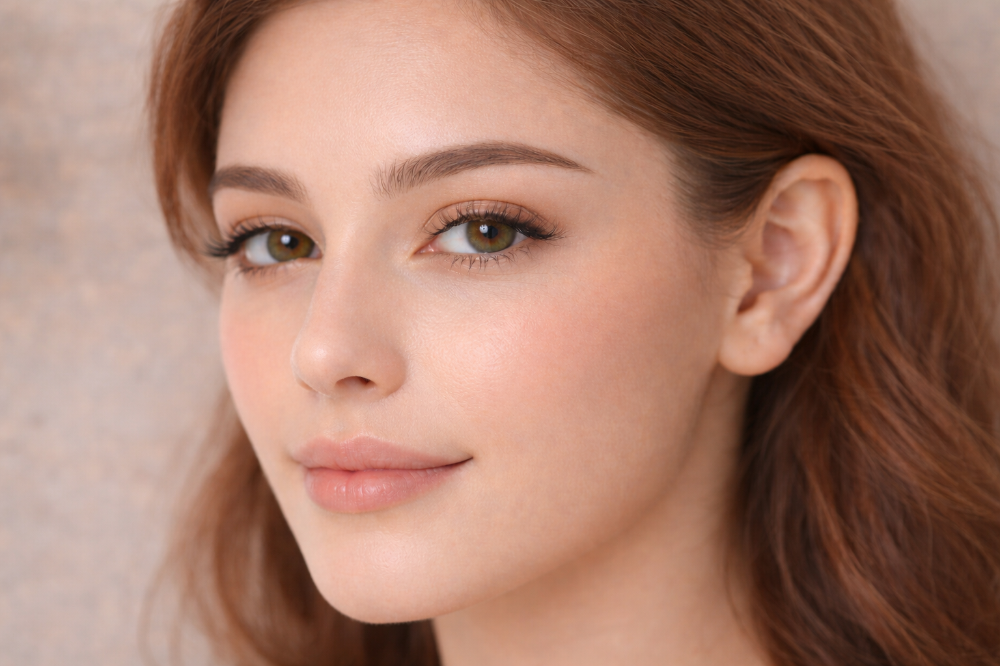
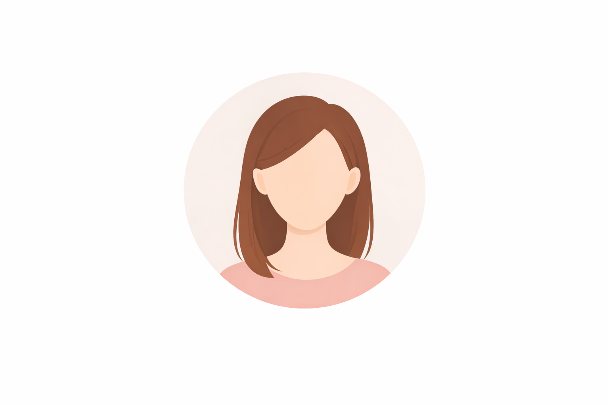
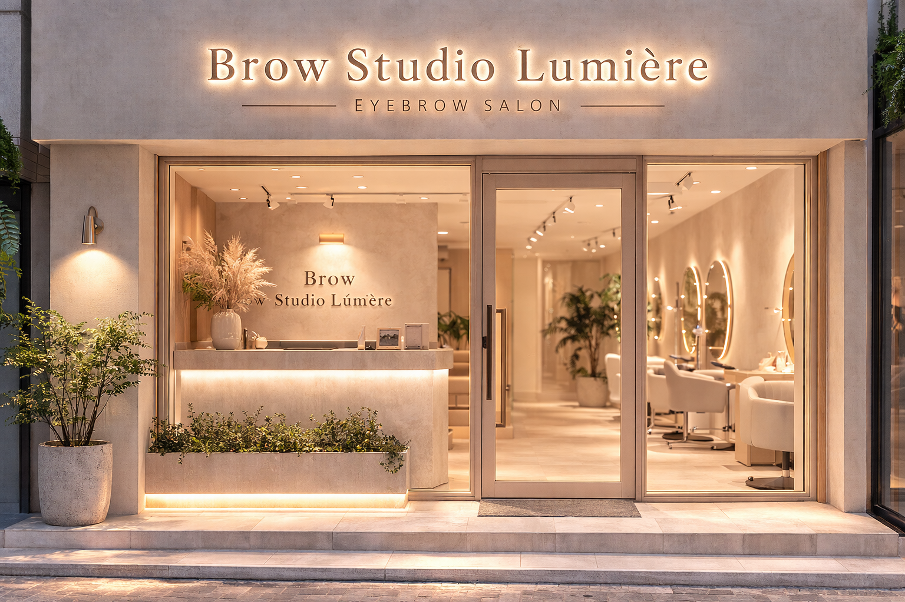

大人女性のためのアイブロウサロン
第一印象は、
眉で変わる。
骨格やお顔のバランスに合わせて、
あなたに似合う理想の眉をご提案します。
Brow Studio Lumièreでは、
丁寧なカウンセリングを通して
お客様一人ひとりの
骨格や雰囲気、
ライフスタイルに合わせた
アイブロウデザインをご提案します。
落ち着いた空間で、
ゆったりとした時間を過ごしながら
あなたらしい美しい眉を整えます。
※初回限定キャンペーン実施中
Concept
毎朝のメイク時間、
眉で悩んでいませんか？
眉を整えるだけで、
顔の印象は大きく変わります。
落ち着いた空間で、ゆったりと過ごすアイブロウ時間
あなたに似合う眉を、
プロがデザイン
眉は、顔の印象を左右する
とても大切なパーツです。
「自分に似合う眉がわからない」
「左右のバランスがうまく整わない」
など、眉に関するお悩みを
抱えている方も多くいらっしゃいます。
当サロンでは、
骨格やお顔のバランスをもとに
お客様一人ひとりに似合う
アイブロウデザインをご提案しています。
丁寧なカウンセリングを通して、
「似合う眉」「毎日のメイクが楽に
なる眉」
を一緒に見つけていきます。
鏡を見るたび、
少し自信が持てる毎日へ。
こんなお悩み
ありませんか？
眉メイクや自己処理について、
このようなお悩みを感じている方も
多くいらっしゃいます。
自分に似合う眉がわからない
SNSや雑誌で見た眉を真似しても、
「自分の顔に合っているのか分からない」と感じたことはありませんか？
骨格やお顔のバランスによって、似合う眉の形は
人それぞれ異なります。
左右のバランスがうまく整わない
自分で眉を整えると、
左右の高さや形が違ってしまう…。
そんなお悩みを持つ方も多くいらっしゃいます。
眉は少しの違いでも顔の印象が変わるため、
バランスを整えるのが難しいパーツです。
毎日の眉メイクがうまくいかない
「朝のメイクで眉を描くのに時間がかかる」
「毎日同じ形に描けない」など、
眉メイクに悩んでいる方も少なくありません。
眉のベースを整えることで、毎日のメイクがぐっと楽になります。
自己処理で失敗してしまう
自己処理で眉を整えているうちに、
「細くなりすぎた」「形が崩れてしまった」という
経験はありませんか？
正しい眉デザインと施術によって、自然で美しい眉を整えることができます。
実際に多くのお客様が、
このようなお悩みをきっかけに
当サロンへご来店されています。
当サロンが選ばれる理由
技術力・カウンセリング・空間づくりなど、
多くのお客様にご来店いただいている
理由があります。
骨格に合わせた眉デザイン
あなたに似合う眉をプロが提案
眉は顔の印象を大きく左右する重要なパーツです。
当サロンでは骨格やお顔のバランス、目元の印象などを考慮しながら、
お客様一人ひとりに似合うアイブロウデザインをご提案しています。
自分では気づきにくい魅力を引き出す眉デザインで、
より自然で美しい印象
へ導きます。
丁寧なカウンセリング
理想の眉を一緒に見つけます
「どんな眉が似合うかわからない」
そんな方でも安心してご相談ください。
普段のメイクやライフスタイル、理想のイメージなどを丁寧にヒアリング
しながら、お客様に最適な眉デザインをご提案いたします。
初めてアイブロウサロンをご利用される方でも安心して施術を受けて
いただけます。

落ち着いたプライベート空間
リラックスできる上質な時間
忙しい毎日の中で、ほっと一息つけるような空間づくりを大切にしています。
落ち着いた雰囲気のサロンで、リラックスしながら施術を受けていただけます。
自分へのご褒美のような時間を過ごしていただける、
心地よいサロン空間を
ご用意しています。
Eyebrow Design
人気のアイブロウデザイン
骨格やお顔の印象に合わせた、
人気の眉デザインをご紹介します。

ナチュラルアイブロウ

平行眉デザイン
アーチ眉デザイン

韓国風アイブロウ
大人上品アイブロウ
ふんわりナチュラル眉
Customer Voice
実際にご来店いただいたお客様の声
当サロンをご利用いただいたお客様から、
嬉しいお声を多数いただいています。
施術の仕上がりや接客についても
高い評価をいただいております。

20代 女性
眉の形にずっと悩んでいましたが、丁寧にカウンセリングしていただき、自分に似合う眉デザインを
提案してもらえました。
仕上がりもとても自然で、メイクもしやすくなり
大満足です。
30代 女性
自己処理で形がバラバラになっていた眉が、
とてもきれいに整いました。
顔の印象が変わって、
周りからも「雰囲気変わったね」と言われることが
増えました。
40代 女性
落ち着いたサロンでとてもリラックスできました。
眉のバランスを整えてもらっただけで顔全体の印象がすっきりして嬉しいです。
Flow
施術の流れ
ご予約から施術完了までの
流れをご紹介します。
初めての方でも安心して
ご来店いただけます。
ご予約
WEBまたはお電話からご予約ください。
ご希望の日時をお選びいただけます。
初めての方もお気軽にご予約ください。
カウンセリング
お客様の眉のお悩みや理想のイメージを
丁寧にヒアリングします。
骨格やお顔のバランスを確認します。
眉デザイン
骨格や筋肉の動きを見ながら、
お客様に似合う眉デザインをご提案します。
施術
眉ワックスや毛流れを整えながら、
自然で美しい眉に仕上げます。
仕上げ・アフター
眉メイクで仕上げを行い、
ご自宅での
ケア方法も
アドバイスいたします。
FAQ
よくあるご質問
初めてアイブロウサロンを
ご利用される方から
よくいただくご質問をまとめました。
はい、初めての方でも安心してご来店いただけます。
丁寧なカウンセリングを行い、お客様のお悩みやご希望に合わせて
眉デザインをご提案いたします。
メニューによって異なりますが、 初回はカウンセリングを含めて 約45分〜60分ほどのお時間をいただいております。
できるだけ自己処理をせずに
ご来店いただくことをおすすめしています。
眉の状態を確認しながらデザインを行うため、
自然な状態の方がより綺麗に整えることができます。
はい、メイクをしたままご来店いただいても問題ありません。
施術前に必要に応じてメイクを落とし、
眉の状態を確認しながら施術を行います。
個人差はありますが、
約3〜4週間ほど綺麗な状態をキープできます。
定期的に整えることで、より理想の眉デザインを保ちやすくなります。
理想の眉で、
第一印象をもっと美しく
骨格やお顔のバランスに合わせた
眉デザインをご提案します。
初めての方でも安心してご来店いただけます。
お電話でのご予約はこちら
000-0000-0000
Access
店舗情報
ご来店の際はこちらの住所を
ご確認ください。
駅から徒歩圏内でアクセスしやすい立地です。
Brow Studio Lumière
〒810-0001
福岡県福岡市中央区○○1-2-3 ○○ビル3F
- 営業時間
- 10:00 〜 19:00
- 定休日
- 不定休
- アクセス
- 地下鉄○○駅 徒歩3分
